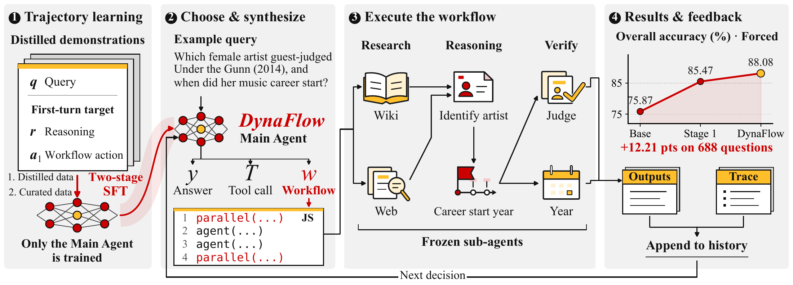
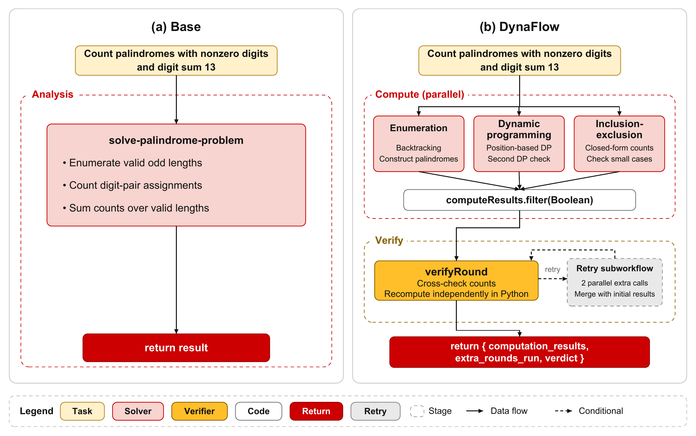
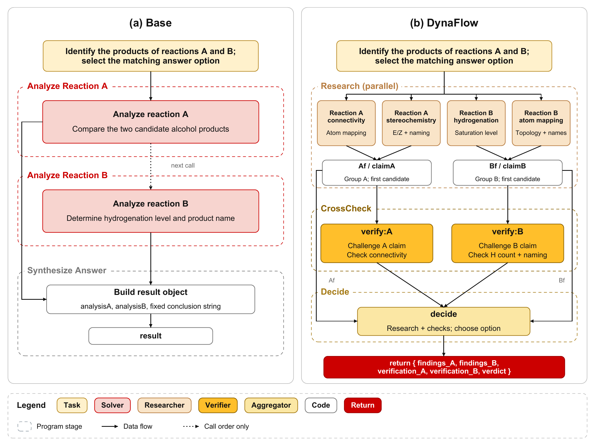
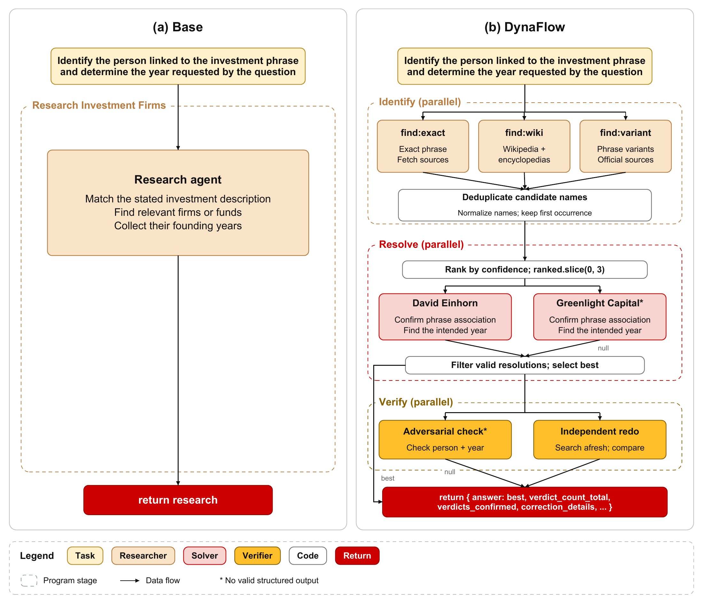
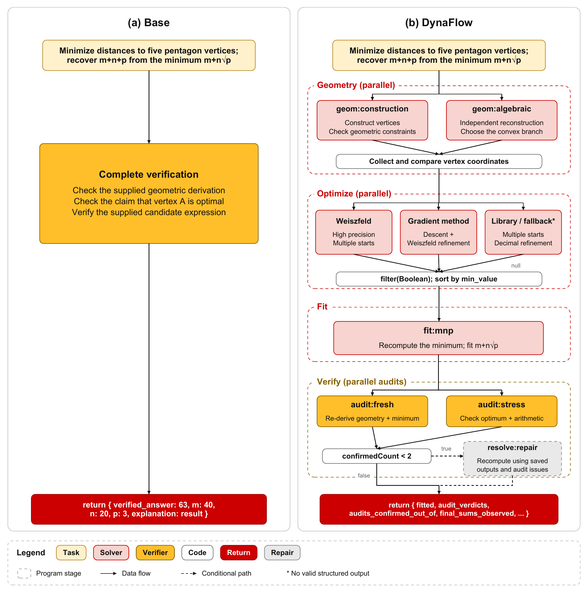
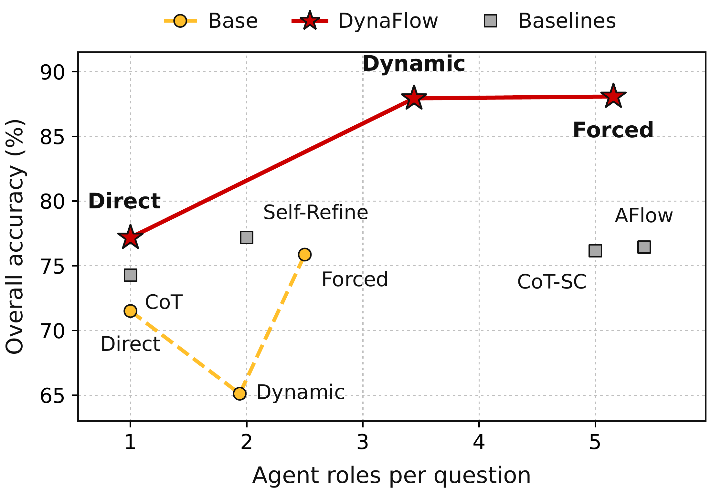
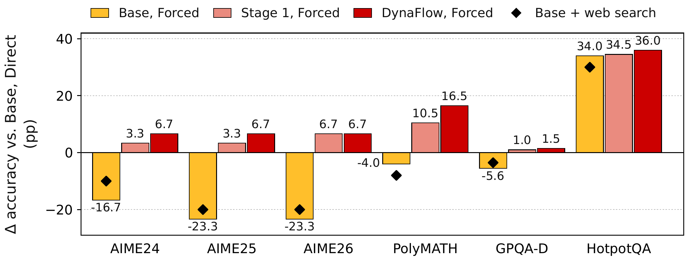

选择与生成
直接作答、调用工具，或编写 JavaScript 工作流。
按任务设计的协作。
以代码生成、执行并迭代多智能体工作流。

全部基于 Qwen3.5-27B · 六个基准 · 查看结果 ↓
不同任务需要不同的协作方式：有的直接作答最好，有的需要并行探索，有的需要按序推理与验证。DynaFlow 让主智能体自己设计协作：判断何时值得调用工作流，并为当前任务编写程序，定义角色、依赖、信息传递与校验。
主智能体为每次协作编写、运行并修订一段程序。
直接作答、调用工具，或编写 JavaScript 工作流。
串行或并行运行子智能体，把输出传给需要它的智能体。
读取输出与执行轨迹，然后作答或发起后续工作流。
两阶段 SFT 只训练主智能体，子智能体保持冻结。
同一道题上 Base 与 DynaFlow 的工作流对比，子智能体相同且冻结。
任务：统计各位数字非零、数字和为 13 的回文数个数。

点击图片可放大。
Base 因计算错误得到 59。DynaFlow 的三个求解器与验证器都得到正确答案 62。
任务：确定反应 A 与 B 的产物，并选出对应选项。

点击图片可放大。
Base 运行两个互不相连的分析。DynaFlow 的校验对初始候选提出质疑，决策智能体综合研究证据与质疑作出判断。
任务：根据投资相关描述确定人物，再检索题目所问的年份。

点击图片可放大。
Base 直接搜索公司及其成立年份。DynaFlow 先识别候选人物，再逐一检索对应年份。
任务：求到五边形五个顶点距离之和的最小值 m + n√p，并给出 m + n + p。

点击图片可放大。
一个优化器失败并被过滤；两次审核都确认拟合结果，因此修复分支没有触发。
所有设置使用相同的 Qwen3.5-27B 主干、冻结子智能体、工具与运行时。
左右滑动表格查看全部基准。
| 方法 | AIME ’24 30 | AIME ’25 30 | AIME ’26 30 | PolyMATH 200 | GPQA-D 198 | HotpotQA 200 | 总体 688 |
|---|---|---|---|---|---|---|---|
| 单智能体基线 | |||||||
| CoT | 96.67 | 93.33 | 86.67 | 83.00 | 85.35 | 46.50 | 74.27 |
| CoT-SC | 90.00 | 93.33 | 96.67 | 84.50 | 85.86 | 50.50 | 76.16 |
| Self-Refine | 96.67 | 93.33 | 93.33 | 87.50 | 88.38 | 48.00 | 77.18 |
| 自动化多智能体基线 | |||||||
| AFlow | 93.33 | 96.67 | 100.00 | 86.00 | 87.37 | 47.00 | 76.45 |
| 未训练的主智能体 | |||||||
| Base Direct | 93.33 | 93.33 | 93.33 | 74.00 | 83.33 | 47.50 | 71.51 |
| Base + Web search | 83.33 | 73.33 | 73.33 | 66.00 | 79.80 | 77.50 | 74.71 |
| Base Dynamic | 63.33 | 63.33 | 73.33 | 64.00 | 77.78 | 53.00 | 65.12 |
| Base Forced | 76.67 | 70.00 | 70.00 | 70.00 | 77.78 | 81.50 | 75.87 |
| 训练后的主智能体（本文） | |||||||
| DynaFlow Direct | 93.33 | 90.00 | 90.00 | 87.00 | 86.87 | 51.50 | 77.18 |
| DynaFlow Dynamic | 93.33 | 100.00 | 96.67 | 91.50 | 83.84 | 84.50 | 87.94 |
| DynaFlow Forced | 100.00 | 100.00 | 100.00 | 90.50 | 84.85 | 83.50 | 88.08 |
总体为 688 题的微平均。只有 Base + Web search 和工作流设置可以检索，因此 HotpotQA 一列与单智能体基线并非同条件对比。


Forced 模式下的首个工作流，训练前后对比。
用 ← → 键或左右滑动切换。
主智能体不调用工作流作答。
主智能体自行判断何时调用工作流。
每个任务都通过工作流完成。
python scripts/dynaflow.py demo --mode direct
python scripts/dynaflow.py demo --mode dynamic
python scripts/dynaflow.py demo --mode forced环境配置请参见代码仓库的 README。
如果本研究或代码对你有所帮助，欢迎引用我们的论文：
@article{liu2026dynaflow,
title={DynaFlow: Learning Free-Form Multi-Agent Orchestration},
author={Liu, Ruhao and Li, Qi and Wang, Shizun and Wang, Xinchao},
journal={arXiv preprint arXiv:2610.34467},
year={2026}
}